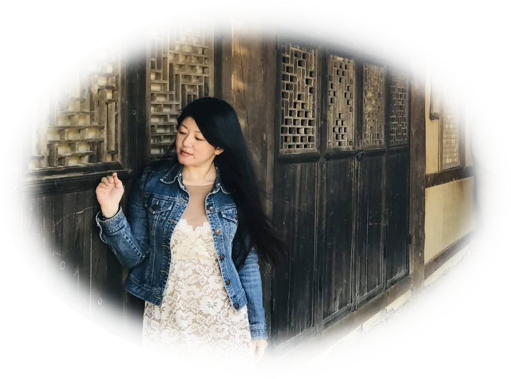

About us


私たちは、社長自身が歩いた道だけをご案内する、ちょっと変わった旅の専門店です。
現地の空気、文化、人とのふれあい——そのすべてを五感で味わう、濃厚で本物の旅をお届けします。
社長が実際に訪れ、感動した国のみをご紹介。今後も、足を運んだ国だけを厳選して追加していきます。
社長自身が女性だからこそ分かる、旅先での不安や配慮。安全性と快適さを重視したプランをご提案します。
観光地を巡るだけでは終わらない。現地の暮らしや文化に触れ、心に残る体験を重視しています。
年齢や性別を問わず、すべての方に「自分らしい旅」を楽しんでいただけます。

「旅は、人生を豊かにする最高のスパイス。」
20か国以上を自らの足で訪れ、観光ガイドには載っていない、路地裏のカフェ、地元の人との語らい、風の匂い——
そんな“生きた旅”を、あなたにも届けたくて、この会社を立ち上げました。
女性として旅する中で感じた「ちょっとした不安」や「小さな気づき」を、旅のプランに反映。
安心と冒険が共存する、心に残る旅をデザインします。
観光地を巡るだけではなく、現地の暮らしに触れ、心に残る体験をご提供します。
そんな「濃厚な旅」をあなたにもお届けしたいと考えています。